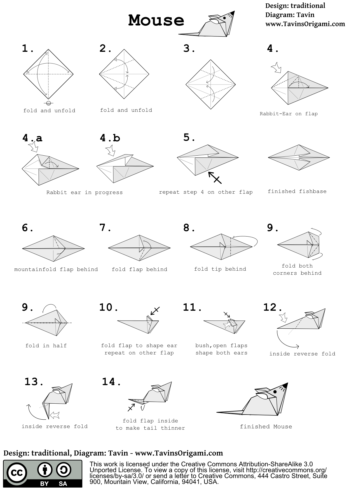

How to Build a Gaming PC: A Step-by-Step Guide for Beginners
By: Riley
Introduction
Building a Gaming PC: Why it's Worth the Effort
Are you tired of lagging, low-resolution games on your outdated computer? Are you ready to take the plunge into custom PC building to get the best possible gaming experience? If so, you're in the right place.
As a beginner, building a gaming PC may seem daunting. However, with the right information and guidance, it can be a fun and rewarding experience. In this step-by-step guide, we'll walk you through the process of building a gaming PC from scratch.
First, let's discuss why building a gaming PC is worth the effort. A gaming PC allows for customization, which means you can tailor your computer to your specific needs and preferences. This means you can build a computer that meets your gaming needs and budget, without having to compromise on performance.
Additionally, building your own gaming PC can be cost-effective in the long run. A pre-built gaming computer can come with a hefty price tag, and you may end up paying for features you don't need or want. Building your own PC allows you to purchase only the components you need, which can result in significant cost savings.
Finally, building a gaming PC is a valuable learning experience. You'll gain knowledge about the components that make up your computer, how they work together, and how to troubleshoot issues. This knowledge can be applied to other areas of your life and career, making it a worthwhile investment of your time and money.
In the following sections, we'll guide you through the process of building a gaming PC step-by-step, from choosing the right components to assembling the final product. Whether you're a complete beginner or have some experience with building computers, our guide will provide the information and insights you need to build a high-performance gaming PC.
ad space
Step 1: Research and Planning
Building a gaming PC is an exciting journey for any gaming enthusiast, but before you can start, you need to lay a solid foundation by researching and planning. This initial step is crucial in ensuring the success of your gaming rig, and it sets the foundation for every other step.
Researching and planning involves identifying the specifications that meet your gaming needs, figuring out your budget, selecting parts that are compatible with each other, and deciding on the aesthetics of your build. This may sound daunting, but fear not, with our comprehensive guide, we'll walk you through everything you need to know to get started.
A gaming PC is only as good as its components, so it's essential to do your research and choose wisely. Selecting parts that meet your gaming requirements can be overwhelming, especially if you're new to the game.
The first question you need to ask yourself is what games you're planning on playing. Demanding games like Cyberpunk 2077 or Microsoft Flight Simulator require higher-end components than less demanding ones like Apex Legends. Our guide provides detailed explanations of each component's function and performance, so you can understand what works best for you.
Once you've selected your components, it's important to make sure they're compatible with each other. Our guide covers the importance of choosing a motherboard that supports your CPU, selecting RAM that works with your motherboard and CPU, and ensuring your power supply unit (PSU) can power all of your components.
Finally, you get to choose the aesthetics of your build. RGB lighting, case size, and cable management may seem like trivial matters, but they can drastically enhance the visual appeal of your build.
In conclusion, a successful gaming PC starts with research and planning. By following our step-by-step guide, you'll be well on your way to building the gaming rig of your dreams.
ad space
Step 2: Build the PC
Now that you've gathered all the necessary components, it's time to roll up your sleeves and put together your gaming PC. But how exactly do you do that? Fear not, for here is your step-by-step guide to building a gaming PC.
Step 1: Prepare the Case
First, make sure you have a clean and spacious work area to assemble your PC. Then, take your case out of the box and remove any packaging material. Depending on your case, you may need to remove its panels, which are usually held by screws.
Step 2: Install the Power Supply Unit
Your power supply unit (PSU) is responsible for powering all the components in your PC, so installing it is crucial. The PSU is usually mounted at the bottom of the case, and you'll need to attach it with screws. Once the PSU is securely in place, plug in the necessary cables to your motherboard, GPU, and storage devices.
Step 3: Install the Motherboard
Your motherboard is the foundation of your gaming PC, so it's important to install it correctly. First, attach the I/O shield to the back of the case, then carefully slide the motherboard into place, aligning the screw holes with the standoffs. Screw the motherboard in, but don't tighten the screws all the way yet.
Step 4: Install the CPU and Cooler
Now it's time to install the brain of your PC: the CPU. First, lift the retention arm on your motherboard's CPU socket, then carefully align your CPU's pins with the socket's holes. After that, lower the retention arm to secure the CPU in place. Next, install your cooler by following the manufacturer's instructions.
Step 5: Install the RAM and GPU
Your RAM and GPU are what make your gaming experience smooth and seamless, so installing them is vital. Simply align the RAM sticks with the slots on your motherboard, then press down until you hear a click. For your GPU, insert it into the PCIe slot on your motherboard, then screw it in place.
Step 6: Cable Management and Final Checks
Once all your components are installed, it's time to tidy up your cables and make sure everything is securely in place. Check that your fans are connected and spinning correctly, and ensure that your monitor, keyboard, mouse, and other peripherals are plugged in and working.
And voila! You've successfully built a gaming PC from scratch. So what are you waiting for? Boot it up and start gaming!
ad space
Step 3: Testing and Troubleshooting
So you've gathered all the parts you need, put them together following the steps carefully, and now it's time to test your gaming PC to see if it can handle your favorite games. This step is crucial, as it allows you to identify any potential issues and make the necessary adjustments before you start using your computer regularly.
Before turning on your gaming PC for the first time, make sure all cables are correctly connected, and everything is securely in place. It's a good idea to double-check your work to avoid any potential damage that may occur. Once you're satisfied that everything is in order, you can turn on your computer.
When your PC boots for the first time, it will automatically detect all hardware components connected to the motherboard. This process is known as POST (power-on self-test), and it should take a few seconds to complete. If everything goes smoothly, you will see the BIOS (basic input/output system) screen.
If you encounter any issues during POST or the BIOS screens, such as not detecting all components or an error message, you will need to troubleshoot the problem. The problem could be due to incorrect connections or faulty components.
If you encounter any issues during POST or the BIOS screens, such as not detecting all components or an error message, you will need to troubleshoot the problem. The problem could be due to incorrect connections or faulty components.
To identify any issues with your PC, you can use software tools such as CPU-Z, GPU-Z, and CrystalDiskMark to see if all components are working correctly. You should also run stress tests such as Prime95, FurMark, and Memtest86+ to check the stability of your PC.
Testing and troubleshooting your gaming PC may seem like a daunting task. Still, it is vital to ensure your computer is running at its best and can handle all the latest games without any problems. Follow these steps, and you will be confident that your new gaming PC is performing correctly, giving you the freedom to enjoy your games without any interruptions or issues.
ad space
Step 4: Maintenance and Upgrades
When it comes to building a gaming PC, many beginners tend to focus heavily on the initial build process, but it's important to remember that maintenance and upgrades are also key factors in ensuring a great gaming experience. In Step 4 of our guide, we'll dive into the various types of maintenance and upgrades that you should keep in mind as you enjoy your new gaming rig.
Regularly maintaining your gaming PC can help keep it running smoothly and prevent any performance issues. This includes tasks such as dusting your PC, defragmenting your hard drive, and updating your drivers. Taking the time to perform these tasks can improve your gaming experience and prolong the life of your PC.
Of course, there may come a time when your gaming PC needs an upgrade. This could be a simple upgrade such as adding more RAM, or a more significant upgrade such as replacing your graphics card or upgrading your processor. Knowing how to properly upgrade your PC can be a daunting task, but don't worry - our guide has got you covered.
We'll cover the various types of upgrades you may need, as well as the steps you need to take to ensure a successful upgrade. From understanding compatibility issues to properly installing hardware, we'll make sure you have all the information you need to take your gaming PC to the next level.
Remember, your gaming PC is a valuable and powerful tool that requires proper care and attention. By following the tips and advice in Step 4 of our guide, you can keep your PC running smoothly and enjoy a top-notch gaming experience for years to come.
ad space
Conclusion
After following this beginner's guide on how to build a gaming PC, you are now ready to start slaying those gaming battles with ease. But before you say goodbye after reading all the parts of this guide, let us summarize what you learned and give you some final tips before you start crafting your dream gaming machine.
Now that you have gone through the process of choosing components, putting them together, and checking your system's compatibility, you can now confidently choose the best graphics and processing power for your perfect gaming experience. Remember that even if the process can be daunting at first, building your own gaming PC can save you a ton of money in the long run, and ultimately give you a gaming setup that you can be proud of.
Aside from that, there are a few more things that you need to consider before you start gaming. Make sure that you have proper ventilation and cooling systems, as gaming PCs run hotter than average personal computers. Also, keep in mind that maintenance is crucial for the longevity of your gaming PC. Regular cleaning, monitoring, and tweaking of your system is needed to ensure that it is always in its best shape.
Finally, we encourage you to join gaming communities and forums to get more ideas and advice from other gamers who have similar setups. Not only will you learn new things, but you can also make new friends who share the same passion for gaming as you.
We hope that this beginner's guide was helpful in your journey to building your ultimate gaming PC. Remember, building your own rig may seem challenging at first, but with the right knowledge, time, and effort, you can create the gaming setup of your dreams. Good luck, and happy gaming!
ad space